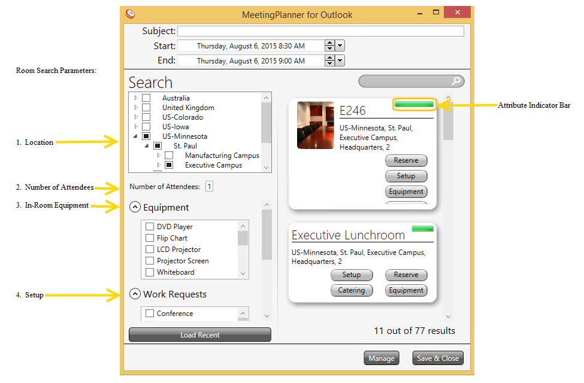
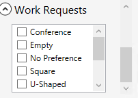
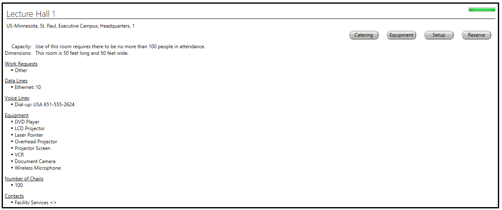
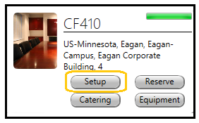
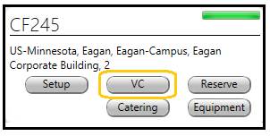
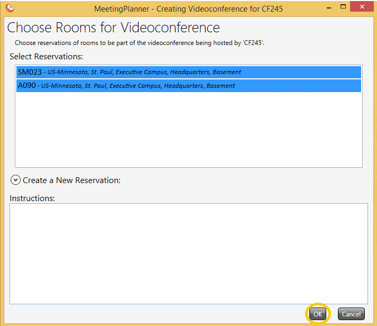
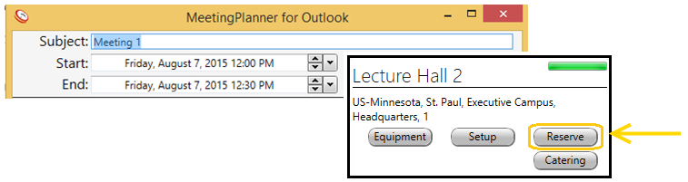

Create a meeting from the Outlook Calendar to include:
Drag and drop meeting dates and times in Outlook to modify a reservation. MeetingPlanner will automatically update.
Use Scheduling Assistant in Outlook to view attendee availability.
Note: Leave the Location field blank; once a room is reserved using MeetingPlanner, the field will automatically populate with the location information.
Open MeetingPlanner by launching the New Reservation tool from the Outlook Calendar.
MeetingPlanner allows users to search for rooms according to Hierarchy, Number of Attendees, In-Room Equipment (fixed equipment), and Work Requests (room setup, ie: videoconferencing).
Note: At a glance, the green bar (in each room window) is a visual indicator of the amount of attributes available in response to the data entered in the search parameters.
Click on the arrows, next to each location, to narrow the search and view the hierarchy tree.
MeetingPlanner will default the number of attendees invited from Outlook +1 to include the reservation owner. A different number of attendees can be entered from the MeetingPlanner application. Any room capacity conflicts will be indicated in red text in the ‘Room’ window but will not prevent a user from reserving the room.
In-room equipment that is not available is indicated in red text in the ‘Room’ window. Such equipment can be requested as portable equipment using the equipment tab in the identified room.
Setup that is not available is indicated in red text. Alternate setup options (if available) can be requested using the setup or VC tab in the ‘Room’ window.
Reservation Window

Note: If multiple setups are selected from the ‘Work Request’ window, MeetingPlanner may return rooms with multiple setup options. Once reserved, MeetingPlanner will automatically default the setup according to its order in the setup list.
Example of ‘Work Requests’ list and search:

If both conference and square are selected as a search parameter and are available in the room, MeetingPlanner will assign the conference room setup to the reservation because it is ordered before square in the list of options
Once all search parameter data is entered, use the scroll bar on the right side of the ‘Reservation’ window to view the available rooms.
View room description by clicking on any of the room names. Reservations can be made from the ‘Room Description’ window as well.

Setup and Videoconferencing can also be added to the reservation using the associated tabs from the ‘Room’ window. The tabs must be used prior to reserving the room in order to make such arrangements.
The setup tab only appears if setup is available in the chosen room. Setup must be chosen before reserving the room.

Note: Organizations may identify setup reservation cut-off hours before a meeting. Users will not be able to reserve meetings with setup within the set cut-off time.
Note: Once setup is selected from the Setup tab in the ‘Room’ window, the room will automatically be reserved as well.
Note: MeetingPlanner automatically generates a notification to support setup crews and the reservation owner indicating the meeting room, time, date, and setup request.
Note: Typically, organizations attach buffer times to both ends of a meeting with setup. Reservation buffer times will be viewed from the ‘Request a Setup’ window, ‘Room Reservation’ window, and in other MeetingPlanner applications.
The videoconference tab is viewable from the ‘Room’ window when a room includes videoconference capabilities.


Note: Once Videoconferencing is selected from the VC tab in the ‘Room’ window, the room will automatically be reserved as well.
Note: MeetingPlanner automatically generates a notification to support setup crews and the reservation owner indicating the meeting room, time, date, and videoconferencing request.
Once the room to reserve is identified:
Once reserved, the room status color will change to green.

If attendees are invited, Send the notification email through Outlook.
Important: Facility support work requests are automatically generated through MeetingPlanner.
Note: Meetings cannot be made in the past unless the user has access (security permissions).
Note: Meetings created in MeetingPlanner automatically synchronize to Outlook/Exchange and all other MeetingPlanner applications.
Delegate reservations can be created by users with access to other users Outlook Calendar.